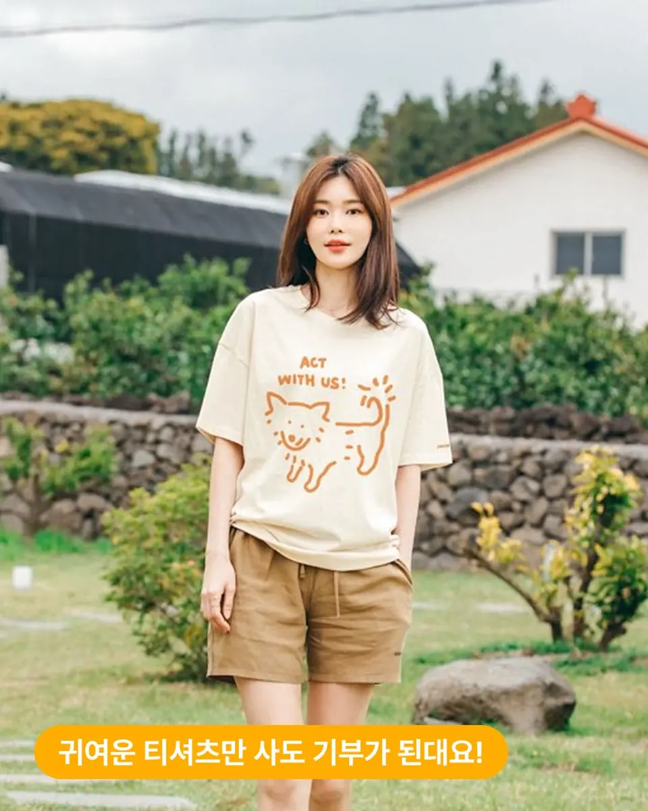
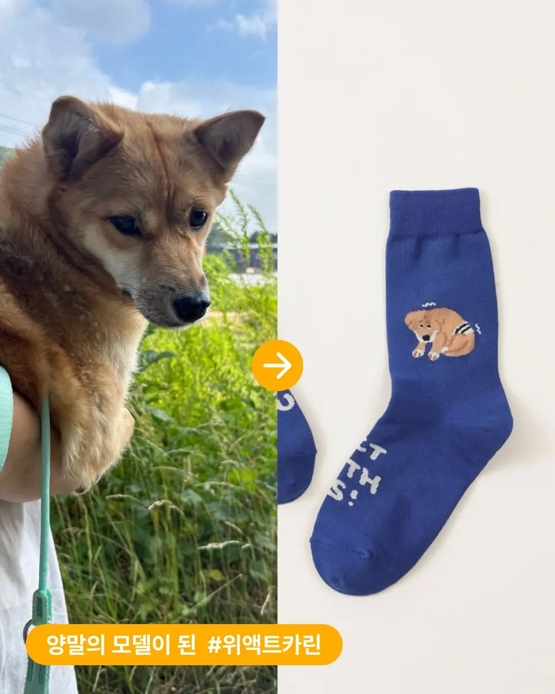
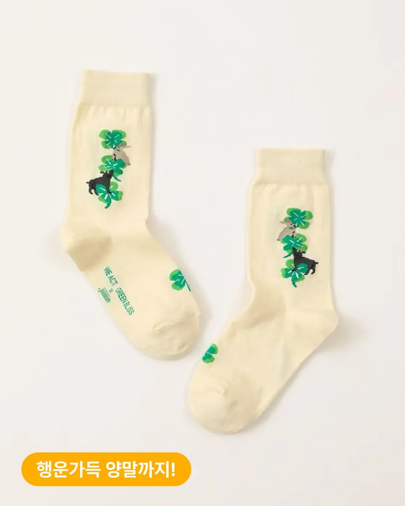
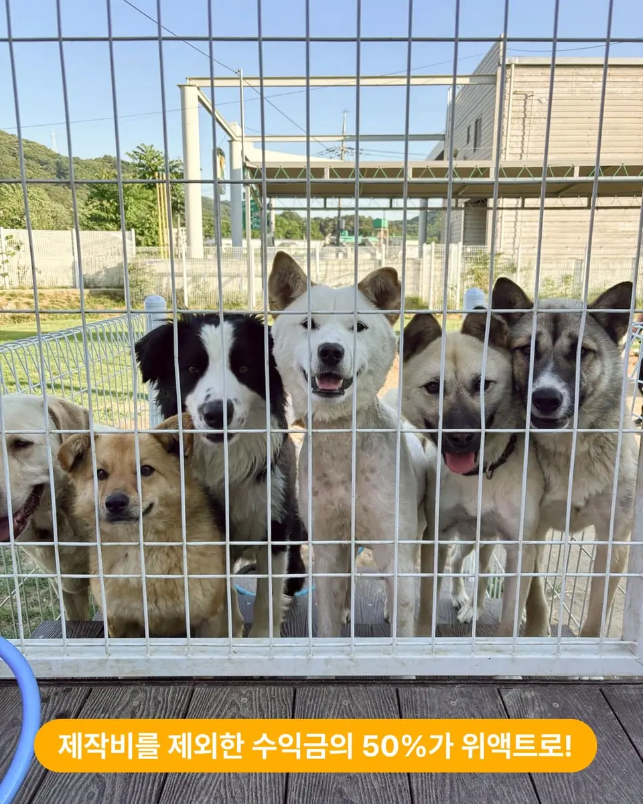

Notices · 2025.07.26
Happybean fundraiser with Greenbliss has begun!

You can donate just by buying a cute T-shirt?! 🫢
The Happybean fundraiser prepared by WeAct and Greenbliss (@greenbliss7) has begun!
This fundraiser is a special project for the rescued animals who survived this spring's wildfires like a miracle.

Do you remember the huge wildfires that swept Gyeongnam and Gyeongbuk in March?
WeAct stayed at the 'Gyeongbuk wildfire rescue', where countless animals were suffering in the flames, for 13 days, rescuing and treating hundreds of dogs, cats, goats, rabbits and more.
Lives that had to face the raging fire with their whole bodies.


Most of them entered the adoption center after about two months of hospital treatment and are getting ready to meet new families.


But some are still being treated.


The reward models for this fundraiser are those precious lives that survived against all odds!


🐶 'Daon', rescued while wandering the road with burns over her whole body
🐰 'Peuril', a rabbit whose ears were burned so badly they melted
🐶 'Roda', whose whole body was blackened by smoke
🐶 'Karin', who could hardly bear even contact with people
🐐 'Heukmi', who survived alone on a goat farm burned to the ground


Rewards include warm-hearted goods such as T-shirts, handkerchiefs and socks that carry these animals' faces.

Until one day they fully recover from the scars of the fire and rest in the arms of their forever families!
Please join the Happybean fundraiser by WeAct and Greenbliss!

👉 To take part, use the link on the WeAct Instagram (@we.a.c.t) profile!
👉 Or go directly through the Happybean link (click)!
📍 50% of the fundraiser proceeds, after production costs, will be used for the rescued animals' treatment and rehabilitation and the adoption center's living costs.
ACT WITH US ! 🤝
▪ Donate: click the Linktree link on the WeAct Instagram (@we.a.c.t) profile
▪ Text donation: send a support text (KRW 2,000) to #70794800
▪ PayPal: hello@weactkorea.org
▪ Venmo: weact